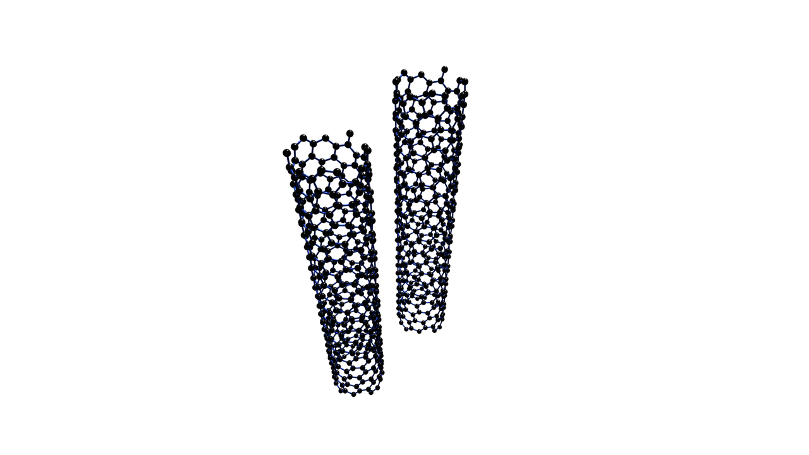

나노기술에 대한 가능성을 처음 제시한 것은 1950년대에 노벨 물리학상을 수상한 미국의
리처드 파인만(Richard Feynman, 1918~1988) 교수다. 그는 미국 물리학회 강연에서
'원자 수준에서의 물질 조작가능성'에 관하여 최초로 언급하였다. 1959년 캘리포니아
공과대학에서 열린 미국 물리학괴 강연에서는 "못핀의 머리 위에 [대영백과사전(Encyclopedia
Britannic)] 전권을 모두 수록할 수 있는 충분한 공간이 있다.(There is plenty of room
at th bottom.)"라고 하며 나노 기술의 가능성에 관하여 역설하였다.
1960~1970년대는 양자역학(Quantum Mechanics)에 관한 실험 물리학적 성과들이 간헐적으로
발표되어 나노기술에 대한 관심을 지속시켰다. 본격적인 연구는 1980년대에 들어와서
이루어졌다. 1981년 IBM 취리히 연구소의 게르트 비니히(Gerd K. Binnig)와 하인리히 로러
(Heinrich Rohrer)가 원자 크기의 100분의 1 해상도를 실현케 하는 주사형 터널링 현미경
(Scanning Tunneling Microscope, STM)을 개발함으로써 나노기술은 촉발되었다.
일반적으로 과학적 발견은 새로운 도구의 개발과 함께 병행되어왔다. 현미경의 발명이
세포의 발견으로 이어지고, 망원경의 등장이 우주의 신비를 벗기는 데 기여했던 것처럼
나노기술의 발전은 STM과 같은 획기적인 기기에 의하여 작은 원자의 세계를 볼 수 있는
가능성이 열리면서 가속했다. 분자 크기 소자(device)의 세계로 들어가기 위해서는 작은
스케일의 표면 관찰이 필요하였다. 비니히와 로러의 STM은 여기에 새로운 길을 열어주었다.
1985년 일본에서는 국가 프로젝트인 '나노 기구 프로젝트'가 시작되었다. 1986년에는 AT&T
벨 연구소가 STM을 이용한 원자의 분리와 수정 실험에 성공하여 원자 수준에서의 조작가능성을
입증하였다. 이후 '분자 나노기술'의 개념이 정립되면서 분자기계와 같은 본격적인 나노장치에 관한
개념들이 제시되기 시작하였다. 그리고 응용기술 분야의 연구뿐만 아니라 나노세계에 대한
기초적인 연구를 수행하기 위하여 나노세계 관찰용 분석기기 개발에 많은 노력을 기울였다.
SPM(Scanning Probe Microscopy)과 TEM(Transmission Electron Microscopy)이 개발되어 발전하면서 과학자들은
나노 크기를 직접 관찰할 수 있게 되어 DNA와 나노결정, 풀러렌(Fullerend) 등을 연구할 수 있었다.
SPM을 이용하여 발견한 대표적인 나노세계의 현상은 Quantum Mirage이다. 1999년 한 국제학술대회에서
수여된 나노사이언스 상(Nanoscience Prize)의 최초 수상자인 이글러(Don Eiglar)박사는 SPM의
탐침으로 수십 개의 코발트 원자의 전자들이 물결치듯 파동을 만들어내는 현상을 발견하고 이를
'Quantum Mirage'라고 불렀다.
기념비적인 나노물질이라 할 수 있는 풀러렌은 1996년 노벨상 수상자인 미국 라이스 대학의 스몰리
(R.E. Smalley)와 컬(R.F. Curl)이 발견하였다. 탄소의 결정구조는 지금까지 다이아몬드, 흑연, 무정질의 세 형태로
존재한다고 믿었다. 그러나 풀러렌이ㅡ 경우는 육각형과 오각형이 어우러진 결정구조임이 밝혀져 나노물질 분야에서
일대 혁신을 일으켰다. 좀 더 상세히 말하면 풀러렌은 새로운 형태의 탄소 원소로서 탄소 원자가 Closed Shells에
배열되는 것을 말한다. 종전에는 단지 여섯 가지 결정 형태의 탄소 원가가 알려져 있었다. 이는 두 종류의 graphite,
두 종류의 diamind, chaoit, 그리고 carbon(VI)이었다. 그중에 마지막 두 개는 1968년, 1972년에 각각 발견되었다.

사진 : 탄소 나노튜브
또 하나의 중요한 나노물질인 탄소 나노튜브(Carbon Nanotubes, CNT)는 1991년 NEC의 이지마(S. Iijima) 박사가
발견하였다. 전도성이 우수한 형상을 가지며, 저전압에서 전자 방출이 잘 되는 성질이 있기 때문에 CNT를 이용한
FED(Field Emission Device)는 저소비전력, 고정밀, 저비용의 장점이 있다. CNT에 대한 응용연구 성과로는 벽걸이 TV를
위한 CNT-FED 개발에 따른 CNT 박막 기술, 패턴 에칭 기술, CNT 박막 위에 절연막을 적층하는 가공 기술 등이 있다.
그뿐만 아니라 탄소 나노튜브는 트랜지스터 등의 응용에도 유요한 기술이며 수소 저장 특성을 이용한 연료 전지의 응용을 집중적으로
연구, 개발하고 있다. 최근에는 그래핀(graphene)이라고 불리는 graphite 한 층으로 된 매우 얇은 박막이 발견되면서
여러 가지 전극 및 응용 물질로 폭발적인 관심을 받고 있다.